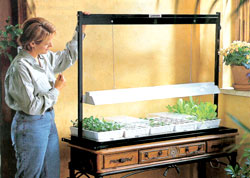

Use The Right Light For Seed-Starting Success
Grow lights help gardeners succeed with home seed starting. Includes a reference to Mother's Multipurpose Grow Light Bookcase.
By Brook Elliot
February/March 2004
Seed starting with grow lights is fun and empowering. It lets you enjoy a bigger choice of hard-to-find varieties, organic seedlings, earlier harvests and flowering, and much lower costs than buying at the store.
Some gardeners claim seeds start best in east windows; others say south, but the truth is no window is ideal. In most of North America, the angle of the winter sun is too low, and the days aren't long enough to promote good seedling growth. Seedlings grown on any windowsill become thin and leggy as they search for sufficient light.
You'll get much stronger seedlings if you'll grow them under grow lights, and taking the following simple steps will give you the full benefit of starting your seeds this way:
1. Always keep the seedlings very close to the lights - just an inch or two from touching the tubes.
2. Keep the lights on for about 16 hours per day. Plugging the lights into a timer to automatically turn them on and off is very helpful, and a timer only costs about $10.
Standard 48-inch shop light fixtures with a couple of regular fluorescent tubes are your best buy. (Incandescent bulbs do not work well for seed starting.) Shop lights are readily available at any hardware store, but they can be inconvenient to set up and take down each season. The adjustable grow light stands described below will make seed starting easier, and you can use them for houseplants when you aren't starting seeds.
TRAY TABLE LIGHT STAND
Harris Seeds offers an outstanding selection of light stands. The company's four-tray, two-tier light stand features a heavy-duty aluminum frame with two levels, each supporting a two-tube, 48-inch hooded fixture that adjusts up and down by releasing thumbscrews on a continuous slide system. This unit holds four standard 11-by-22-inch flats and sells for about $230. Larger units are available that hold up to 16 flats. Available from Harris Seeds; P.O. Box 24966; Rochester, NY 14264; (800) 514-4441.
GREEN THUMB LIGHT SYSTEM
Hydrofarm manufactures a wide variety of grow-light systems for indoor gardening. The company's tabletop fluorescent light stand consists of a simple aluminum frame supporting a fixture with two fluorescent tubes. The hanging fixture conveniently adjusts up or down with only fingertip pressure, using a spring-friction system.
The larger model is available from: Johnny's Selected Seeds; 955 Benton Ave.; Winslow, ME 04901; 207-861-3901.
The smaller model is carried by Peaceful Valley Farm Supply; P.O. Box 2209; Grass Valley, CA 95945; 888-784-1722.
FREESTANDING LIGHT GARDEN
Gardener's Supply Company offers an aluminum, 68-inch-high, two-shelf unit for $325. The unit comes with removable casters for easy moving. Each shelf holds two seedling flats under a continuously adjustable, 48-inch, 2-tube fixture. They also offer the 54-inch-wide tabletop model shown on Page 108. It includes a hanging, two-tube light fixture, and sells for $125. Available from Gardener's Supply Company; 128 Intervale Rd.; Burlington, VT 05401; 800-876-5520.
BUILD IT YOURSELF
Own a handsaw and a hammer? Make MOTHER'S Multipurpose Plant Grow Light Seed Starting Bookcase for your spring seed starting this year.
After your seedlings graduate to the garden, turn the unit into a fabulous home for houseplants or use it as a sturdy bookshelf.
|
 Courtesy Gardener's Supply A tabletop grow light from Gardener's Supply. |
 Courtesy Harris Seeds 48 dozen - that's how many seedlings you could grow with this Harris Seeds' 12-tray, heavy-duty light stand. |
|